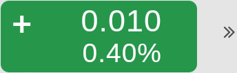

This user guide is designed to guide you through the functions of the Virtual Trading Platform , providing step by step instructions and links to all related information that you may require.
Document Conventions:
- icon is used when writing a Tip.
 icon is used when writing a Note.
icon is used when writing a Note.
Listed below are the hardware and software requirements you need to have in order to install the application on your mobile.
IOS
Devices: iPhone 4S and above
OS: iOS 7.1 and above
Browser: Mobile Safari v7.1 and above, Chrome iOS v38.0 and above
Android
Devices: Work on any device
OS: 4.4 and above (KitKat, Lollipop, and Marshmallow)
Browser: Google Chrome Android v38.0
Mubasher the Virtual Trading Platform is a comprehensive, sophisticated trading platform tailored to active investors. The unique market features in Mubasher the Virtual Trading Platform provide you with the edge you need to be an effective trader in the fast moving market. Mubasher the Virtual Trading Platform supports the full functionality of trading in equity and derivatives. The application is fully integrated with advanced charting tools to help you analyze the market movement.
Note: In the application, icon represents market data is delayed by at least 5 minutes.
Tip: You can rotate any screen in this application horizontally for your ease.
How to login to the application:
- Enter the Username.
- Enter the Password using the virtual keyboard.
- Tap Login.
Optional: Tap the Remember Me check box to save the username and the password to avoid entering them every time you login to the application.
How to logout from the application:
- On the Settings pane, tap Log Out.
How to place the first order:
- In the Watch List, tap on the symbol name and select the Buy icon .
- If you have more than one portfolio, then select the required from the Portfolio drop down.
- Select the required Order Type.
- Limit - is an order where the maximum buying price or the minimum selling price is specified. The order will be executed at the specified price or better.
- Market-A market order is a buy or sell order to be executed immediately at the current market prices.
- Enter the Quantity of stocks or contracts and the Price of a stock or contract that you are going to purchase. Price is not a mandatory field for ‘Market’ orders.
- Select other optional order details depending on your requirement.
- Once the required details are entered, you can tap the Buy button.
- Tap OK to confirm the order.
Order Types:
After you placed the order you can monitor its progress using the Order List.
This section gives real-time update on your trading status and the portfolio valuation.

Buying Power: - This is the total amount of cash held in your account
Currency Convertor: - If you own more than one portfolio in different currencies, you can view the Buying Power and portfolio values converted in those currencies using this dropdown
Portfolio Value: - The value of the stocks held in the portfolio based on the last traded price
Pending Orders: - These are the orders that did not get executed by the time
Filled Orders: - These are the orders that got successfully executed
Unrealized Gain/Loss: - This shows the unrealized profit or loss as a percentage
Market data: - This contains the default markets come for your package. You can select a required market from the dropdown given
This is the default view when you log into the application and this section gives an overview of the current status of the market (exchange).
To check market information:
- On the Markets pane, tap on any required market.
- On the Market Overview screen you will see the status of the market and its main index details with the following data;
- Market Date
- Market Status
- Turnover
- Trades
- Volume
- Symbols Traded
- Market Summary Indication in green, red and blue bars
- Index selection dropdown
- Last traded value, change and the percentage change of the selected index
- Chart view of the index
You can view market information from around the world using the Global Market Summary. It lets you monitor price movement of key market Indices, Commodities and Currencies with last traded price, change and %change data. Information on GMS such as oil prices, FX, major market movements internationally and regionally affect local markets and useful for investors.
To check Global Market Summary:
- On the Markets pane, tap Global Market Summary.
- Switch between the Summary, Indices, Commodity, and Currency tabs to view the data.
- Tap on the change / %change button or the arrow icon  given against an item in the Global Market Summary to see its Detail Quote and the Chart.
Use this feature to view the top rated stocks and contracts in an exchange*. The stocks/contracts shown here are top rated under different categories such as;
Top Gainers by Change
Top Gainers by % Change
Top Losers by Change
Top Losers by % Change
Most Active by Volume
Most Active by Trades
To view Top Stocks/Contracts:
- On the Quotes pane, tap Top Stocks.
- Tap the Filter icon given on the Top Stocks screen and select the required exchange from the given dropdown.
- Select the required category from the next dropdown.
At the time of writing this guide with the market being open, the Top Stocks function is not working properly.
- It does not show the Exchanges
- It shows no data be it stocks in Cash market of Tadawul or Tadawul Futures
Using the Custom Watch List you can view market movement of symbols by looking at the last price and change. By default, the Custom Watch List comes with a set of symbols that you may wish to trade with, however you have the option to remove those symbols as desired and add only the symbols that you may require by following the below given steps.
Note: Mobile version of this application does not show Full Market data. Therefore, you have to search and add the required symbols from the Full Market to the Custom Watch List.
When you tap on a symbol name in the Custom Watch List, you will see the Mini Detail Quote of the symbol containing Open, High, Low, Volume details and the chart. From the Mini Detail Quote, you can place trades using the Buy and Sell  buttons. And when you tap the change / %change button or the arrow icon given against the symbol, you will see the full quote of the particular symbol containing Detail Quote, Time & Sales, Order Book and Chart. You can switch between these tabs to view the relevant data.
buttons. And when you tap the change / %change button or the arrow icon given against the symbol, you will see the full quote of the particular symbol containing Detail Quote, Time & Sales, Order Book and Chart. You can switch between these tabs to view the relevant data.
- Simply tap on the symbol search field
- Select the required symbol from the search results. The symbol will be added to the last raw of the Custom Watch List.
To remove symbols from the Custom Watch List:
- Tap on the symbol name in the Watch List and select Remove From Watchlist .
Use Watch List Chart to analyze the market through a comparison of average volume and percentage change.
Horizontal axis:- Volume / 5 Day Average volume.
Vertical axis:- is the %Change, so what is on the top has the highest positive %Change.
Cross line is located at the value of 1.00. Therefore what is right to that cross line is traded at a higher volume than average and what is left to the cross line is traded at a lower volume than the average.
To view the Watch List Chart:
- On the Watch List pane, tap Watch List Chart.
This section describes the trading functionality available in the Virtual Trading Platform . You need to have a trading account with your broker in order to use the trading functions. If you have a trading account then you can place orders as required.
There are two methods to place an order:
- Tap on the Order Ticket tab under Trade
- In the Watch List, tap on the symbol name and select the Buy icon .
-OR-
Once you have selected the symbol you wish to trade, follow the below procedure:
- If you have more than one portfolio, then select the required from the Portfolio drop down.
- In the Order Ticket window for buying a stock, the Buying Power indicates the available amount in your portfolio which can be utilized to purchase stocks. Generally for most customers Buying Power would indicate the Cash in hand.
- Select the required Order Type.
- Market - is sent to the market and is executed at the best bid for sell orders or best ask for buy orders as available at the time.
- Limit - is an order where the maximum buying price or the minimum selling price is specified. The order will be executed at the specified price or better.
- Enter the Quantity of stocks and the Quotes of a stock that you are going to purchase. Price is not a mandatory field for ‘Market’ orders.
- Select other optional order details depending on the requirement.
- Once the required details are entered, you can tap the Buy button.
- Tap OK to confirm the order.
Different Order Types:
After you placed the order you can monitor its progress using the Order List.
Order List shows the status of orders you placed on a current trading day.
Once you place an order using the Virtual Trading Platform , the order is validated and sent to the Order Management System. During this time, the order will proceed to one of the following statuses:
Queued, Filled, Partially Filled, or Rejected.
The active orders once sent to the exchange, try to find a match from the other side of the Order Book. If a match is not found, then the orders are stored in the Order Book as per the price/time priority. The status of such orders is displayed as Queued in the Order List. Once the order is matched the status in the Order List is updated to Filled.
Please note here the order statuses can differ depending on the exchange.
Once the order you placed is filled, or is partially filled, it is reflected in the Portfolio and the cash balance is updated in the Account Summary window.
To view the placed orders:
- On the Trade pane tap on Order List.
To view details of an order:
- Tap on the symbol name of the required order in the Order List.
Use this procedure to alter some information in the order you had placed already. When amending an order, you can change only a part of the order which is still not executed.
The Amend option is active if the orders meet the following states. Note that the order statuses can differ depending on the exchange.
- Queued
- Partially Filled
- Replaced
To amend an order:
- In the Order List window, tap on the required symbol and select Amend.
- In the Amend order window, edit the required details in Order Type, Quantity, Price, Good Till areas.
- Tap Amend and confirm the order.
Note: Price is editable only for Limit orders.
After amending an order, the order status is changed to Replaced in the Order List and will be updated accordingly based on the execution of the order.
You can also cancel an order before it gets executed during following statuses.
- Queued
- Partially Filled
- Replaced
In case if an order is partially filled, the rest of the order which is not executed can be cancelled. After cancelling a General Order, the system sends a new order with a new Order ID.
To cancel an order:
- In the Order List window, tap on the required symbol and select Cancel.
- In the Cancel order window, Tap Cancel.
From the Account Summary, you can get a quick view of your cash account. The information displayed in Account Summary is updated in real-time and is shown in the currency that you select from the Currency dropdown. As and when you place a buy order, the system blocks the value of the order from the cash account (reflected in the Pending Withdrawal Amount) and once the order is filled the blocked amount becomes zero. When a sell order is placed, the order value is reflected as Unsettled Sales and once the order is filled the Cash Balance is updated.
To view the Account Summary:
- On the Trade pane tap Account Summary.
- If you have more than one portfolio, then select the required from the Portfolio list.
- Select the related currency from the Currency list.
You will see a summary of your account details.
Account Summary Details
The following columns are available in the Account Summary window.
Cash and Positions Summary
Cash Available for Withdrawal - The cash amount available for withdrawal (Cash Balance - Pending Withdrawal Amount)
Unsettled Sales - The unsettled amount of the sell orders placed
Cash Balance - The cumulative value of your cash account
Pending Amount (Withdrawals and Order) - The amount blocked when placing the buy orders, pending cash withdrawals etc.
Holdings Market Value – The market value of your holdings is displayed
Account Net Worth – The amount available in your cash account once the liabilities are subtracted
Buying Power - The amount of cash available to buy stocks (Cash Available for Withdrawal + OD Limit)
Unrealized Gain/Loss: - This shows the unrealized profit or loss as a percentage
The portfolio gives a live valuation of your securities based on their current market value, the purchase price and the number of shares held. The Portfolio window helps you manage your accounts, giving you a total overview of trading so that you can easily track the profits and losses on your securities account. You can get an idea of the account at a glance as a profit is displayed in Green and a loss is displayed in Red.
To view the Portfolio Details:
- On the Trade pane tap Portfolio.
- If you have more than one portfolio, then select the required from the Portfolio list.
- Select the related currency from the Currency list.
- Tap anywhere on the portfolio summary to view additional portfolio details.
You will see a summary of the selected portfolio.
The Order Search feature in Mubasher the Virtual Trading Platform helps you search for all orders you have placed in the past. You can search orders by Portfolio, Status, From and To dates. Once you entered the search criteria tap the Search button to get the matching details.
Note: From the Order Search screen, you can amend or cancel an order.
To view Order Details:
- In the Order Search window, tap on the order that you need to view details and select Details.
To amend an order:
- In the Order Search window, tap on the order that you need to amend and select Amend.
- In the Amend Order window, enter the necessary details and tap Amend.
To cancel an order:
- In the Order Search window, tap on the order that you need to cancel and select Cancel.
- In the Cancel Order window, enter the necessary details and tap Cancel.
This feature gives a notification of every trading activity that you do with the Virtual Trading Platform . For example, when an order you placed gets filled, when you deposit money to your account or withdraw money from our account, such notifications will get listed under Trading Alerts.
To view Trading Alerts:
- On the Trade pane, tap Trading Alerts.
With the Account Statement feature, you can view cash deposits, withdrawal details, and portfolio details for a certain month.
To view cash deposits & withdrawal details:
- On the Trade pane, tap Account Statement.
- Select the required Portfolio if you have more than one.
- Select Cash Statement as the Statement Type.
- Select the required Month that you need to view the details for.
- Tap Submit.
Note: To get a report of your portfolio details, select Holding Statement as the Statement Type.
This section describes the price information you can view using the Virtual Trading Platform .
Detail Quote provides price and volume data, which are basically the most important information every investor needs to know when evaluating the performance of a security.
To view the Detail Quote of a symbol:
- On the Quotes pane, tap Detail Quote.
- Enter the required symbol name in the Symbol field.
Order Book gives an indication of the liquidity for a particular symbol. The higher the number of buy and sell orders at each price, the higher the depth of the market.
To view the Order Book of a symbol:
- On the Quotes pane, tap Order Book.
- Enter the required symbol name in the Symbol field.
By default, the Price side will be displayed. Tap the Order tab to view the Order side.
Time and Sales is the most in depth display of a market’s trading information. It shows each individual trade as it occurs, with the time, number of units and the price at which they were executed for a given day.
The Trades Direction feature given in Time and Sales displays Tick information in an easy to understand manner.
To view Time and Sales details for a symbol:
- On the Quotes pane, tap Time and Sales.
- Enter the required symbol name in the Symbol field.
The Chart provides an easy-to-read graphical representation of a security's price movement over a specific period of time. With the use of chart you can analyze a wide range of securities and forecast their future price movements.
On the chart, the y-axis (vertical axis) represents the price scale and the x-axis (horizontal axis) represents the time scale. Prices are plotted from left to right across the x-axis with the most recent plot being the furthest right.
To view a Stock's or Contract's Chart:
- On the Quotes pane, tap Chart.
- Tap the Filter icon given on the chart screen.
- In the Symbol field, enter the symbol name or contract name that you want to view the chart.
To change the chart period:
- Tap the filter icon given on the chart screen.
- Tap on the required time period. e.g.: 1D, 1W, 1M, YTD, 1Y etc.
To change the chart style:
- Tap the filter icon given on the chart screen.
- Tap the styles drop down and select the required from the list. By default the Area chart is displayed. e.g.: Line, OHLC, Candle etc.
You can get updated with latest news and announcements using the ‘News’ and ‘Announcements’ features available in the Virtual Trading Platform . Also, you can filter news or announcement items through providers for your ease.
To view News:
- On the Quotes pane, tap News.
- Tap the Filter icon given at the right corner of the News window.
- Select the required provider from the given options.
- When the specified news displayed, tap on the required news item to view its full details.
To view announcements for a specific symbol:
- On the Quotes pane, tap Announcements.
- Tap the Filter icon given at the right corner of the Announcements window.
- Tick the required category;
- When the specified announcements displayed, tap on the required item to view its full details.
All: Once selected displays announcements of all the markets together.
Market: Tick Market and specify the market name to view announcements for the specified market.
Watch List: Tick this and select a Watch list from the dropdown to view announcements for the symbols included in the selected Watch list.
Symbol: Tick Symbol and enter the symbol name to view announcements for the symbol.
Use Watch List Chart to analyze the market through a comparison of average volume and percentage change.
Horizontal axis:- Volume / 5 Day Average volume.
Vertical axis:- is the %Change, so what is on the top has the highest positive %Change.
Mubasher the Virtual Trading Platform comes with two language options for your ease. The available language options are English and Arabic.
To change the language:
- Tap on Settings, Preferences, Change Language and select the required language
Use the theme selection option to customize the application with the preferred theme colour. You can switch from Dark to Light theme and vice versa to feel a different experience.
To change the theme:
- On the Settings pane, tap on Preferences and then Change Theme.
- On the Change Theme screen, select the required and tap Submit.
You can change the login and trade passwords of Mubasher the Virtual Trading Platform whenever required. The login password is used to login to the application and the trade password is an additional password that you will have to input while placing transactions through the application. This is a measure to provide the online users another level of security.
To change passwords:
- On the Settings pane, tap Password Change.
- In the Password Change section, enter the current and new passwords in respective fields.
- Tap on Submit for the new passwords to take effect.
Notes:
- In order to ensure the strength of your passwords, you will have to use alphanumeric characters.
- You will have to update both passwords (login and trading) for the change to take effect.
Use the Contact Support section to send us complain, inform about a bug or to make a suggestion.
To Contact Support:
- On the Settings pane, tap Contact Support.
- Select whether it is a Complain, Usage Bug or a Suggestion.
- Enter the Subject and Details in the given areas.
- Select the required form which you need to get contacted by our support team. i.e.: Email, Phone. Select Not Required if you do not need to get contacted.
- Tap Submit.
By selecting the options given in this section, you will not get price and quantity fields in the Order Ticket filled with values. Instead, you can manually enter them as required.
However, if you want to see these values in the Order Ticket, then uncheck the relevant boxes.
To show price empty:
- On the Settings pane, tap Preferences.
- Tap the Show Price Empty check-box and click Save.
To show quantity empty:
- On the Settings pane, tap Preferences.
- Tap the Show Quantity Empty check-box and click Save.
Disclaimer
Copyright (c) 2017 Mubasher Financial Services. All Rights Reserved. Designated trademarks and brands are the property of their respective owners.
Notice of Non-Liability
The data and the screenshots used in this Help Guide are solely for illustration purposes and the actual data and interfaces may differ depending on the prevailing market situation. Mubasher Financial Services and the authors assume no liability for errors, omissions or damages resulting from the use of this Help Guide or the information contained in this Help Guide.